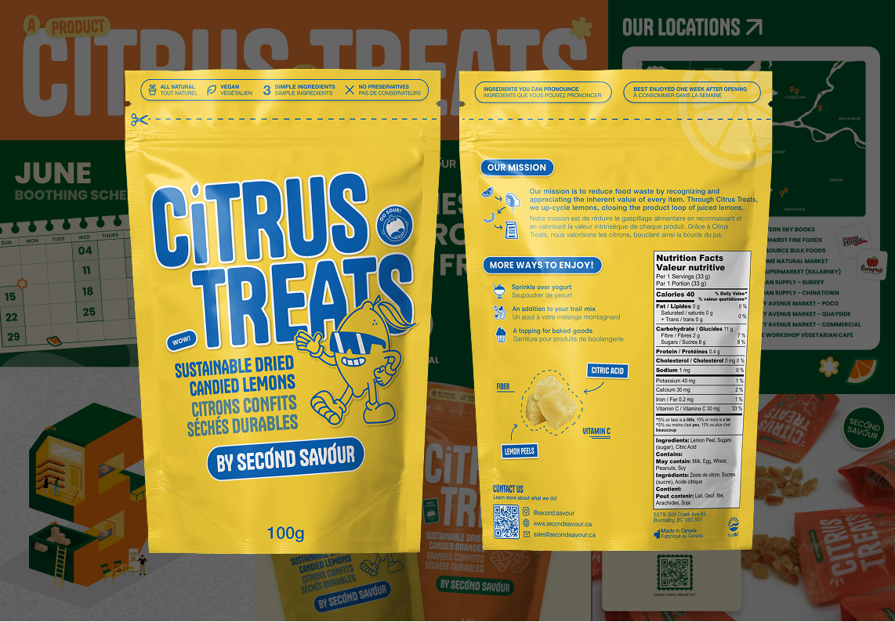
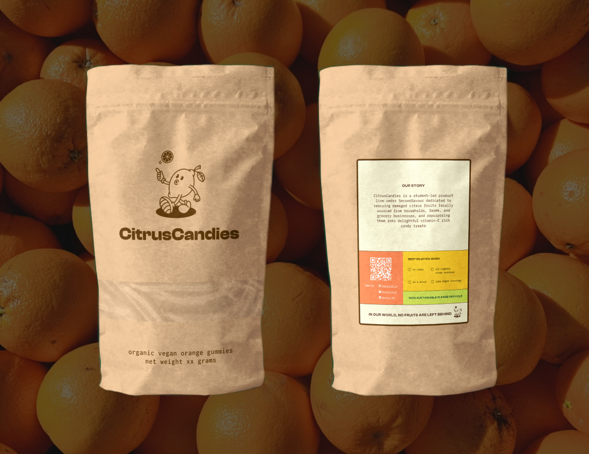
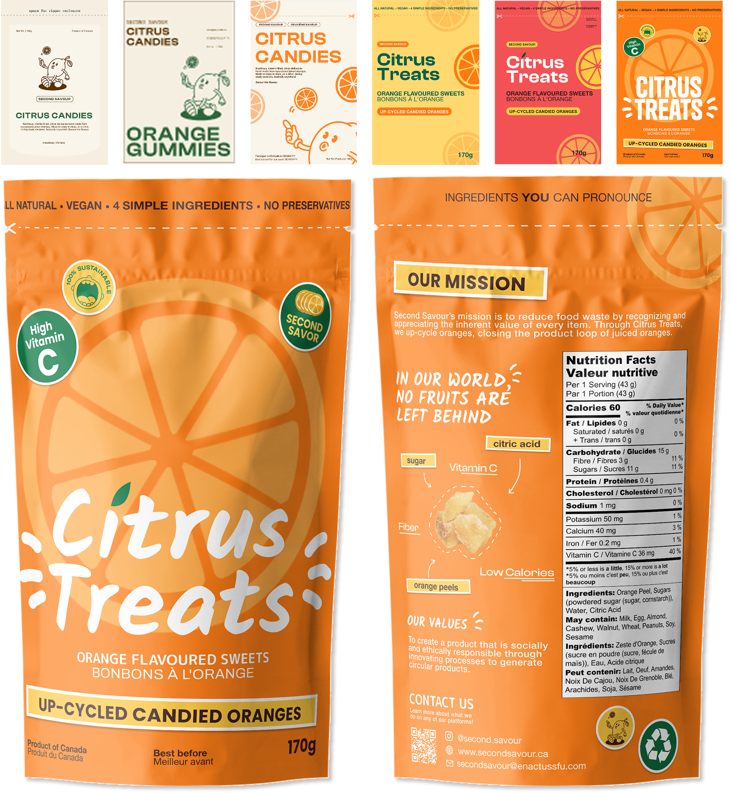
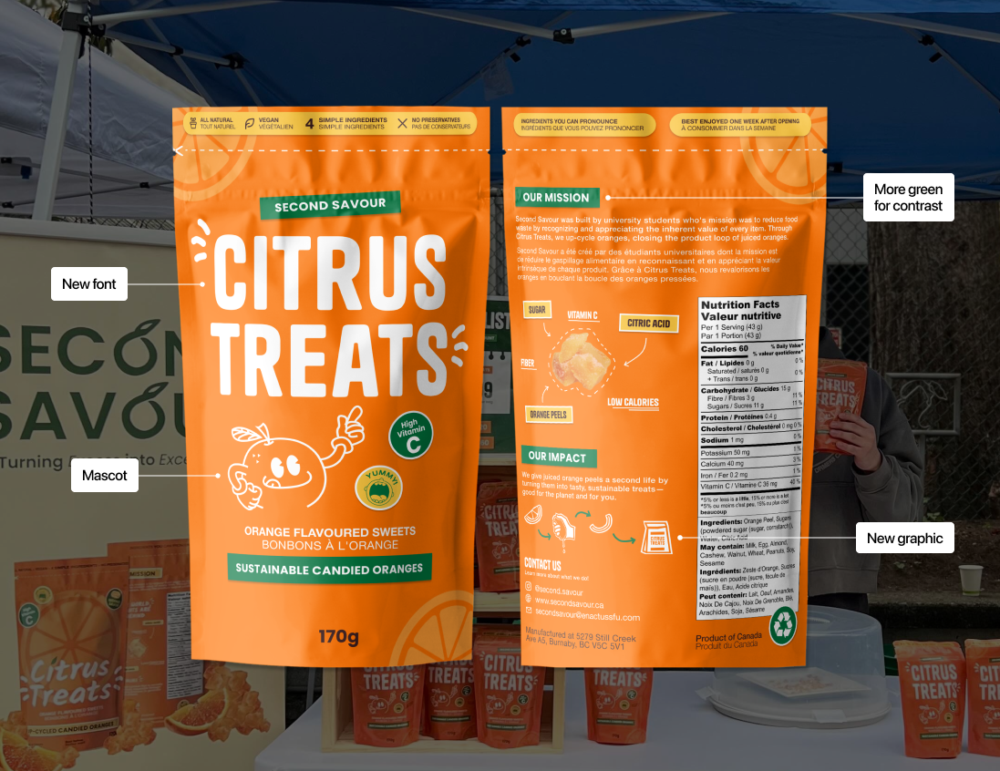
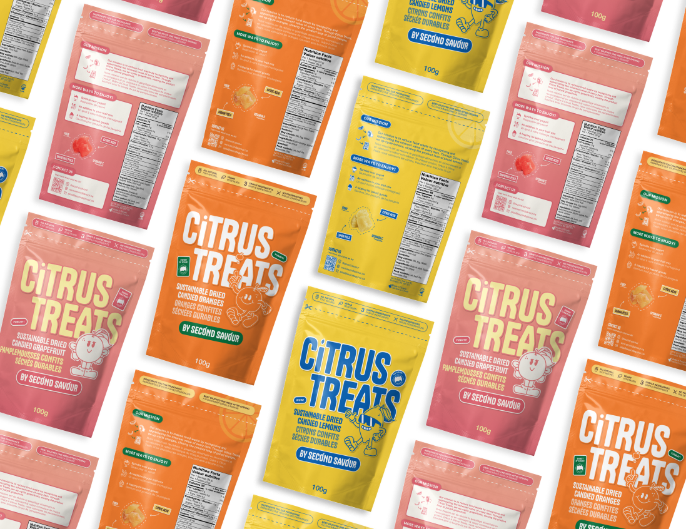
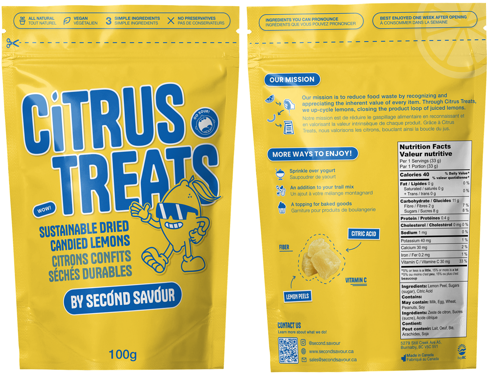

Second Savour
2024 - Present
Project
Visual Design
Product Design
Marketing
Team
Me
Second Savour is a food startup repurposing imperfect produce into healthy candy alternatives through the product line, “Citrus Treats.”
As the sole designer, I created the visual identity and creative direction for the brand. My work includes product packaging, brand assets, and digital marketing.

The Problem
Originating as a university project, Second Savour needed to evolve into a market-ready product.
This required two key objectives:
01
New packaging that would stand out on shelf and capture customers
02
Establish brand recognition beyond the student community.
Research
I conducted a brand forensic, looking for four qualities:
visceral
appeal, legibility, ethos, and legacy.

What I Found
Candy brands often rely on strong taglines.
Value propositions should be communicated upfront.
Design with the intention to scale across multiple flavours.
Process
Initially, the simplicity of the original packaging appealed, but I realized that candy is sweet and fun, and the packaging needed to reflect that.

I experimented with bright backgrounds and landed on orange to accurately represent the upcycled orange peel candies. My first iteration was bold, showcasing sticker elements and angled text to convey playfulness.

This design entered markets and retail!
It worked, but it didn’t stand out.
Second Iteration
After receiving customer feedback, I removed the angled elements, increased contrast, and introduced a mascot to bring personality to the brand. I also selected a new typeface that would become the brand’s defining font.

However, the product couldn’t sell itself without a strong pitch. The design still felt incohesive, and the brand needed to launch a second flavour: lemon.
Final Iteration
For the final iteration, I revised the stickers with descriptive product words, adjusted the front angle to spark curiosity, reincorporated the mascot, fixed hierarchy issues, and rewrote the back content to highlight flexible uses rather than the company story.

I also created a second design for the lemon flavour!
